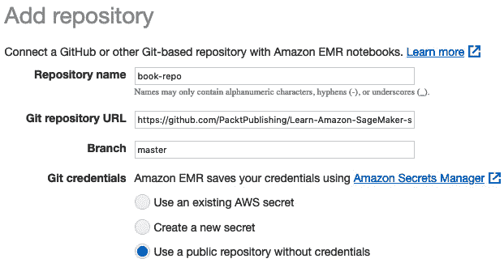

第七章:使用内置框架扩展机器学习服务
在前三章中，您学习了如何使用内置算法来训练和部署模型，而无需编写一行机器学习代码。然而，这些算法并没有涵盖机器学习问题的全部范围。在很多情况下，您需要编写自己的代码。幸运的是，一些开源框架让这变得相当容易。
在本章中，您将学习如何使用最流行的机器学习和深度学习开源框架来训练和部署模型。我们将讨论以下主题:
- 发现 Amazon SageMaker 中的内置框架
- 在 Amazon SageMaker 上运行您的框架代码
- 使用内置框架
我们开始吧！
技术要求
您将需要一个 AWS 帐户来运行本章中包含的示例。如果您还没有，请将浏览器指向 https://aws.amazon.com/getting-started/来创建一个。您还应该熟悉 AWS 免费层(https://aws.amazon.com/free/)，它允许您在一定的使用限制内免费使用许多 AWS 服务。
您需要为您的帐户安装和配置 AWS 命令行界面(https://aws.amazon.com/cli/)。
您将需要一个工作的 Python 3.x 环境。安装 Anaconda 发行版(https://www.anaconda.com/)不是强制性的，但是强烈建议安装，因为它包含了许多我们需要的项目(Jupyter、pandas、numpy等等)。
你将需要一个工作的 Docker 安装。你可以在 https://docs.docker.com 找到安装说明和必要的文件。
书中包含的代码示例可在 GitHub 上获得，网址为https://GitHub . com/packt publishing/Learn-Amazon-sage maker-second-edition。你需要安装一个 Git 客户端来访问它们(https://git-scm.com/)。
在 Amazon SageMaker 中发现内置框架
SageMaker 让你用以下机器学习和深度学习框架训练和部署你的模型:
- Scikit-learn ，无疑是最广泛使用的机器学习开源库。如果你是这个话题的新手，从这里开始:https://scikit-learn.org。
- XGBoost ，一个极其流行的和通用的开源算法，用于回归、分类和排序问题( https://xgboost.ai )。它也可以作为内置算法，如第四章 、训练机器学习模型中所述。在框架模式下使用它会给我们更多的灵活性。
- TensorFlow ，一个极其流行的深度学习开源库(【https://www.tensorflow.org】T42)。SageMaker 还支持可爱的KerasAPI(https://Keras . io)。
- PyTorch ，另一款高人气深度学习开源库(https://pytorch.org)。研究人员尤其喜欢它的灵活性。
- Apache MXNet ，深度学习有趣的挑战者。在 C++中本地实现，它通常比它的竞争对手更快，更具可扩展性。其 Gluon API 为计算机视觉(https://Gluon-cv . mxnet . io)、自然语言处理(NLP)(https://Gluon-NLP . mxnet . io)、时间序列数据( https://gluon-ts.mxnet
- Chainer ，深度学习的另一位当之无愧的挑战者(https://chainer.org)。
- 拥抱脸，NLP 最流行的最先进的工具和模型集合(https://huggingface.co)。
- 强化学习的框架，如英特尔蔻驰、 Ray RLlib 、 Vowpal Wabbit 等。我不会在这里讨论这个话题，因为它会占用另一本书的篇幅！
- Spark ，感谢一个专用的 SDK，让你可以使用PySpark 或Scala(https://github.com/aws/sagemaker-spark)直接从你的 Spark 应用中训练和部署模型。
在https://github . com/aw slabs/Amazon-sage maker-examples/tree/master/sage maker-python-SDK中，你会找到大量的例子。
在这一章中，我们将关注最流行的:XGBoost、scikit-learn、TensorFlow、PyTorch 和 Spark。
开始的最好方法是运行第一个简单的例子。正如您将看到的，工作流程与内置算法相同。我们将强调一些不同之处，我们将在本章的后面深入探讨。
使用 XGBoost 运行第一个示例
在这个例子中，我们将使用 XGBoost 内置框架构建一个二进制分类模型。在撰写本文时，SageMaker 支持的最新版本是 1.3-1。
我们将使用我们自己的基于xgboost.XGBClassifier对象和直接营销数据集的训练脚本，我们在 第 3 章 、AutoML with Amazon sage maker auto pilot中使用过:
- 首先，我们下载并提取数据集:
%%sh wget -N https://sagemaker-sample-data-us-west-2.s3-us-west-2.amazonaws.com/autopilot/direct_marketing/bank-additional.zip unzip -o bank-additional.zip
- 我们导入 SageMaker SDK，并为作业定义一个 S3 前缀:
import sagemaker sess = sagemaker.Session() bucket = sess.default_bucket() prefix = 'xgboost-direct-marketing'
- 我们加载数据集并应用非常基本的处理(因为这不是我们这里的重点)。简单地一键编码分类特征，将标签移动到第一列(XGBoost 要求)，混洗数据集，分割数据集用于训练和验证，然后将结果保存在两个单独的 CSV 文件中:
import pandas as pd import numpy as np from sklearn.model_selection import train_test_split data = pd.read_csv('./bank-additional/bank-additional-full.csv') data = pd.get_dummies(data) data = data.drop(['y_no'], axis=1) data = pd.concat([data['y_yes'], data.drop(['y_yes'], axis=1)], axis=1) data = data.sample(frac=1, random_state=123) train_data, val_data = train_test_split( data, test_size=0.05) train_data.to_csv( 'training.csv', index=False, header=False) val_data.to_csv( 'validation.csv', index=False, header=False) - 我们上传这两个文件到 S3:
training = sess.upload_data(path='training.csv', key_prefix=prefix + '/training') validation = sess.upload_data(path='validation.csv', key_prefix=prefix + "/validation") output = 's3://{}/{}/output/'.format(bucket,prefix) - 我们定义两个输入，数据为 CSV 格式:
from sagemaker import TrainingInput train_input = TrainingInput( training_path, content_type='text/csv') val_input = TrainingInput( validation_path, content_type='text/csv')
- Define an estimator for the training job. Of course, we could use the generic
Estimatorobject and pass the name of the XGBoost container hosted inXGBoostestimator, which automatically selects the right container:from sagemaker.xgboost import XGBoost xgb_estimator = XGBoost( role= sagemaker.get_execution_role(), entry_point='xgb-dm.py', instance_count=1, instance_type='ml.m5.large', framework_version='1.2-2', output_path=output, hyperparameters={ 'num_round': 100, 'early_stopping_rounds': 10, 'max-depth': 5, 'eval-metric': 'auc'} )这里有几个熟悉的参数:角色、基础设施需求和输出路径。其他的呢？
entry_point是我们的训练脚本的路径(可以在本书的 GitHub 库中找到)。hyperparameters被传递给训练脚本。我们还必须选择一个framework_version值；这是我们想要使用的 XGBoost 版本。 - 我们照常训练:
xgb_estimator.fit({'train':training, 'validation':validation}) - We also deploy as usual, creating a unique endpoint name:
from time import strftime,gmtime xgb_endpoint_name = prefix+strftime("%Y-%m-%d-%H-%M-%S", gmtime()) xgb_predictor = xgb_estimator.deploy( endpoint_name=xgb_endpoint_name, initial_instance_count=1, instance_type='ml.t2.medium')然后，我们从验证集中加载一些样本，并以 CSV 格式发送它们进行预测。对于每个样本，响应包含一个介于 0 和 1 之间的分数:
payload = val_data[:10].drop(['y_yes'], axis=1) payload = payload.to_csv(header=False, index=False).rstrip('\n') xgb_predictor.serializer = sagemaker.serializers.CSVSerializer() xgb_predictor.deserializer = sagemaker.deserializers.CSVDeserializer() response = xgb_predictor.predict(payload) print(response)这会打印出以下概率:
[['0.07206538'], ['0.02661967'], ['0.16043524'], ['4.026455e-05'], ['0.0002120432'], ['0.52123886'], ['0.50755614'], ['0.00015006188'], ['3.1439096e-05'], ['9.7614546e-05']]
- 完成后，我们删除端点:
xgb_predictor.delete_endpoint()
我们在这里使用 XGBoost，但是对于另一个框架来说，工作流是相同的。这种标准的训练和部署方式使得从内置算法切换到框架，或者从一个框架切换到下一个框架变得非常容易。
- 框架容器:它们是什么？我们能看看它们是如何建造的吗？我们能定制它们吗？我们可以用它们在本地机器上训练吗？
- 培训:sage maker 培训脚本与普通框架代码有什么不同？它如何接收超参数？它应该如何读取输入数据？它应该在哪里保存模型？
- 部署:模型是如何部署的？脚本应该为此提供一些代码吗？预测的输入格式是什么？
entry_point剧本？我们可以添加用于培训和部署的库吗？
这些问题现在都有答案了！
使用框架容器
SageMaker 包含一个训练和推理容器，用于每个内置的框架，并且它们会定期更新到最新版本。不同的容器也可用于 CPU 和 GPU 实例。所有这些容器统称为称为深度学习容器(https://aws.amazon.com/machine-learning/containers)。
正如我们在前面的例子中看到的，它们允许您使用自己的代码，而不必维护定制的容器。在大多数情况下，您不需要再看了，您可以愉快地忘记这些容器的存在。如果现在觉得这个主题太高级了，现在可以随意跳过它，转到培训和本地部署部分。
如果你好奇或者有定制需求，你会很高兴了解到这些容器的代码是开源的:
- Scikit-learn:https://github.com/aws/sagemaker-scikit-learn-container
- XG boost:https://github.com/aws/sagemaker-xgboost-container
- TensorFlow、PyTorch、Apache MXNet、抱脸:https://github.com/aws/deep-learning-containers
- https://github.com/aws/sagemaker-chainer-container:
首先，这让您了解这些容器是如何构建的，以及 SageMaker 如何用它们进行训练和预测。您还可以执行以下操作:
- 在本地机器上构建并运行它们，进行本地实验。
- 构建并在你最喜欢的托管 Docker 服务上运行，比如亚马逊 ECS 、亚马逊 EKS ，或者亚马逊法盖特(https://aws.amazon.com/containers)。
- 定制它们，将它们推送到 Amazon ECR，并与 SageMaker SDK 中的估算器一起使用。我们将在第 8 章中使用您的算法和代码来演示这一点。
这些容器还有另一个很好的特性。您可以将它们与 SageMaker SDK 一起使用，在您的本地机器上训练和部署模型。让我们看看这是如何工作的。
本地培训和部署
本地模式是利用 SageMaker SDK 培训和部署模型的能力，无需启动 AWS 中的按需托管基础设施。您可以使用本地机器。在这个上下文中，“本地”意味着运行笔记本的机器:它可以是您的笔记本电脑、本地服务器或小型笔记本实例。
注意
在撰写本文时，本地模式在 SageMaker Studio 中不可用。
这是一种在小数据集上快速实验和迭代的极好方法。您不必等待实例出现，也不必为它们付费！
让我们回顾一下之前的 XGBoost 示例，突出显示使用本地模式所需的更改:
- 显式设置 IAM 角色的名称。
get_execution_role()在您的本地机器上不工作(在笔记本实例上工作):#role = sagemaker.get_execution_role() role = 'arn:aws:iam::0123456789012:role/Sagemaker-fullaccess'
- 从本地文件加载训练和验证数据集。将模型本地存储在
/tmp:training = 'file://training.csv' validation = 'file://validation.csv' output = 'file:///tmp'
- 在
XGBoost估算器中，将instance_type设置为local。对于本地 GPU 培训，我们将使用local_gpu。 - 在
xgb_estimator.deploy()中，将instance_type设置为local。
这就是在您的本地机器上使用您将在 AWS 上大规模使用的相同容器来训练所要做的一切。这个容器将被提取到您的本地机器，从那时起您将使用它。当您准备好进行大规模训练时，只需用合适的 AWS 实例类型替换local或local_gpu实例类型，就可以开始了。
解决纷争
如果你看到奇怪的部署错误，尝试重启 Docker ( sudo service docker restart)。我发现它不喜欢在部署过程中被打断，而在 Jupyter 笔记本电脑中工作时，它往往会被打断！
现在，让我们看看如何在这些容器中运行我们自己的代码。这个特性叫做脚本模式。
脚本模式训练
因为您的训练代码运行在 SageMaker 容器中，所以它需要能够做以下事情:
- 接收传递给估计器的超参数。
- 读取输入通道中可用的数据(培训、验证等)。
- 将训练好的模型保存在正确的位置。
脚本模式是 SageMaker 实现这一点的方式。该名称来自于您的代码在容器中被调用的方式。查看我们 XGBoost 作业的培训日志，我们看到这样的内容:
Invoking script with the following command: /miniconda3/bin/python3 -m xgb-dm --early-stopping-rounds 10 --eval-metric auc --max-depth 5
我们的代码像普通的 Python 脚本一样被调用(因此命名为脚本模式)。我们可以看到超参数是作为命令行参数传递的，这回答了我们应该在脚本内部使用什么来读取它们的问题:argparse。
下面是我们脚本中相应的代码片段:
parser = argparse.ArgumentParser()
parser.add_argument('--max-depth', type=int, default=4)
parser.add_argument('--early-stopping-rounds', type=int,
default=10)
parser.add_argument('--eval-metric', type=str,
default='error')
输入数据和保存的模型的位置呢？如果我们更仔细地查看日志，我们会看到:
SM_CHANNEL_TRAIN=/opt/ml/input/data/train SM_CHANNEL_VALIDATION=/opt/ml/input/data/validation SM_MODEL_DIR=/opt/ml/model
这三个环境变量定义了容器中的本地路径，分别指向训练数据、验证数据和保存模型的位置。这是否意味着我们必须手动将数据集和模型从 S3 复制到其他地方？不要！SageMaker 会自动为我们处理这一切。这是容器中支持代码的一部分。
我们的脚本只需要读取这些变量。我推荐再次使用argparse,因为当我们在 SageMaker 之外训练时，这将让我们传递到我们脚本的路径。
下面是我们脚本中相应的代码片段:
parser.add_argument('--model-dir', type=str,
default=os.environ['SM_MODEL_DIR'])
parser.add_argument('--training-dir', type=str,
default=os.environ['SM_CHANNEL_TRAIN'])
parser.add_argument('--validation', type=str,
default=os.environ['SM_CHANNEL_VALIDATION'])
频道名称
SM_CHANNEL_xxx变量根据传递给fit()的通道命名。例如，如果你的算法需要一个名为foobar的通道，你可以在fit()中将其命名为foobar，在脚本中将其命名为SM_CHANNEL_FOOBAR。在您的容器中，该通道的数据将自动在/opt/ml/input/data/foobar中可用。
综上所述，为了在 SageMaker 上训练框架代码，我们只需要做以下事情:
- 使用
argparse读取作为命令行参数传递的超参数。无论如何，您可能已经在代码中这样做了！ - 读取
SM_CHANNEL_xxx环境变量并从那里加载数据。 - 读取
SM_MODEL_DIR环境变量，并将训练好的模型保存在那里。
了解模型部署
- 加载模型的函数
- 在将输入数据传递给模型之前对其进行处理的函数
- 在将预测返回给调用者之前处理预测的函数
所需的实际工作量取决于您使用的框架和输入格式。让我们看看这对 TensorFlow、PyTorch、MXNet、XGBoost 和 scikit-learn 意味着什么。
使用 TensorFlow 部署
张量流推理容器依赖张量流服务模型服务器进行模型部署(https://www.tensorflow.org/tfx/guide/serving)。因此，您的培训代码必须以这种格式保存模型。模型加载和预测是自动可用的。
JSON 是预测的默认输入格式，由于自动序列化，它也适用于numpy数组。也支持 JSON 行和 CSV。对于其他格式，您可以实现自己的预处理和后处理函数、input_handler()和output_handler()。你可以在https://sage maker . readthedocs . io/en/stable/using _ TF . html # deploying-from-an-estimator找到更多信息。
您还可以在https://github . com/AWS/deep-learning-containers/tree/master/tensor flow/inference中深入研究tensor flow 推理容器。
使用 PyTorch 部署
PyTorch 推理容器依赖于__call__()方法。如果没有，你应该在推理脚本中提供一个predict_fn()函数。
对于预测，numpy是默认的输入格式。也支持 JSON 行和 CSV。对于其他格式，您可以实现自己的预处理和后处理功能。你可以在https://sage maker . readthe docs . io/en/stable/frameworks/py torch/using _ py torch . html # serve-a-py torch-model找到更多信息。
您可以在https://github . com/AWS/deep-learning-containers/tree/master/PyTorch/inference中更深入地研究 py torch 推理容器。
使用 Apache MXNet 部署
Apache MXNet 推理容器依靠多模型服务器 ( MMS )进行模型部署(https://github.com/awslabs/multi-model-server)。它使用默认的 MXNet 模型格式。
基于Module API 的模型不需要模型加载功能。对于预测，它们支持 JSON、CSV 或numpy格式的数据。
胶子模型确实需要一个模型加载函数，因为参数需要显式初始化。数据可以以 JSON 或numpy格式发送。
对于其他数据格式，您可以实现自己的预处理、预测和后处理功能。你可以在https://sagemaker.readthedocs.io/en/stable/using_mxnet.html找到更多的信息。
你可以在https://github . com/AWS/deep-learning-containers/tree/master/MXNet/inference/docker更深入地研究 MXNet 推理容器。
部署 XGBoost 和 scikit-学习
同样，XGBoost 和 scikit-learn 分别依赖于https://github.com/aws/sagemaker-xgboost-container和https://github.com/aws/sagemaker-scikit-learn-container。
您的脚本需要提供以下内容:
- 一个
model_fn()功能加载模型。就像训练一样，要加载的模型的位置在SM_MODEL_DIR环境变量中传递。 - 两个用于反序列化和序列化预测数据的可选函数，名为
input_fn()和output_fn()。仅当您需要 JSON、CSV 或numpy之外的其他输入格式时，才需要这些函数。 - 可选的
predict_fn()函数将反序列化的数据传递给模型，并返回一个预测。只有当您需要在预测数据之前对其进行预处理或对预测进行后处理时，才需要这样做。
对于 XGBoost 和 scikit-learn 来说，model_fn()函数非常简单，也非常通用。这里有几个在大多数情况下都有效的例子:
# Scikit-learn def model_fn(model_dir): clf = joblib.load(os.path.join(model_dir, 'model.joblib')) return clf # XGBoost def model_fn(model_dir): model = xgb.Booster() model.load_model(os.path.join(model_dir, 'xgb.model')) return model
SageMaker 还允许您导入和导出模型。您可以将现有的模型上传到 S3，并直接在 SageMaker 上部署它。同样，你可以从 S3 复制一个训练有素的模型，并把它部署到其他地方。我们将在 第十一章 、部署机器学习模型中详细了解这一点。
现在，让我们来谈谈培训和部署的依赖性。
管理依赖性
在许多情况下，你需要添加额外的源文件和库到框架的容器中。让我们看看如何轻松地做到这一点。
为培训添加源文件
默认情况下，所有的估算器都从当前目录加载入口点脚本。如果您需要额外的源文件用于训练，评估器允许您传递一个source_dir参数，该参数指向存储额外文件的目录。请注意，入口点脚本必须在同一个目录中。
在下面的例子中，myscript.py和所有附加的源文件必须放在src目录中。SageMaker 将自动打包目录并将其复制到培训容器中:
sk = SKLearn(entry_point='myscript.py', source_dir='src', . . .
为培训添加库
你可以使用不同的技术来添加训练所需的库。
对于可以用pip安装的库，最简单的技术是在入口点脚本所在的文件夹中添加一个requirements.txt文件。SageMaker 会自动在容器中安装这些库。
或者，您可以使用pip通过发出pip install命令直接在训练脚本中安装库。我们用这个在 第六章训练自然语言处理模型，用 LDA 和 NTM。当您不想或不能修改启动培训作业的 SageMaker 代码时，这很有用:
import subprocess, sys
def install(package):
subprocess.call([sys.executable, "-m",
"pip", "install", package])
if __name__=='__main__':
install('gensim')
import gensim
. . .
对于不能用pip安装的库，应该使用dependencies参数。它在所有的估算器中都可用，并且它允许您列出要添加到训练作业中的库。这些库需要存在于本地虚拟环境或定制目录中。SageMaker 会将它们打包并复制到培训容器中。
在下面的例子中，myscript.py需要mylib库。我们将它安装在lib本地目录中:
$ mkdir lib $ pip install mylib -t lib
然后，我们将它的位置传递给估计器:
sk = SKLearn(entry_point='myscript.py', dependencies=['lib/mylib'], . . .
最后一项技术是在 Dockerfile 中为容器安装库，重建映像，并将其推送到 Amazon ECR。如果在预测时还需要这些库(比如说，用于预处理)，这是最好的选择。
添加用于部署的库
如果您需要特定的库在预测时可用，您可以使用一个requirements.txt文件来创建可以用pip安装的库。
对于其他库，唯一的选择是定制框架容器。您可以使用image_uri参数将其名称传递给估算器:
sk = SKLearn(entry_point='myscript.py', image_uri= '123456789012.dkr.ecr.eu-west-1.amazonaws.com/my-sklearn' . . .
在这一节中，我们讨论了许多技术主题。现在，让我们来看看大局。
将所有这些放在一起
使用框架时的典型工作流如下所示:
- 在代码中实现脚本模式；也就是说，读取必要的超参数、输入数据和输出位置。
- 如果需要，添加一个
model_fn()函数来加载模型。 - 在任何 SageMaker 容器之外，在本地测试您的训练代码。
- 配置合适的估计器(
XGBoost、TensorFlow等)。 - 使用估算器在本地模式下训练，使用内置容器或您定制的容器。
- 以本地模式部署并测试您的模型。
- 切换到托管实例类型(比如，
ml.m5.large)进行培训和部署。
这种逻辑发展每一步都不需要太多工作。它最大限度地减少摩擦、出错的风险和挫败感。它还优化了实例时间和成本——如果您的代码因为一个愚蠢的错误而立即崩溃，则无需等待并为托管实例付费。
现在，让我们将这些知识应用到工作中。在下一节中，我们将运行一个简单的 scikit-learn 示例。目的是确保我们理解刚才讨论的工作流。
在 Amazon SageMaker 上运行您的框架代码
我们将从一个普通的 scikit-learn 程序开始，该程序在波士顿住房数据集上训练并保存一个线性回归模型，我们在 第 4 章 、训练机器学习模型中使用了该程序:
import pandas as pd
from sklearn.linear_model import LinearRegression
from sklearn.model_selection import train_test_split
from sklearn.metrics import mean_squared_error, r2_score
import joblib
data = pd.read_csv('housing.csv')
labels = data[['medv']]
samples = data.drop(['medv'], axis=1)
X_train, X_test, y_train, y_test = train_test_split(
samples, labels, test_size=0.1, random_state=123)
regr = LinearRegression(normalize=True)
regr.fit(X_train, y_train)
y_pred = regr.predict(X_test)
print('Mean squared error: %.2f'
% mean_squared_error(y_test, y_pred))
print('Coefficient of determination: %.2f'
% r2_score(y_test, y_pred))
joblib.dump(regr, 'model.joblib')
实现脚本模式
- 首先，将超参数作为命令行参数读取:
import argparse if __name__ == '__main__': parser = argparse.ArgumentParser() parser.add_argument('--normalize', type=bool, default=False) parser.add_argument('--test-size', type=float, default=0.1) parser.add_argument('--random-state', type=int, default=123) args, _ = parser.parse_known_args() normalize = args.normalize test_size = args.test_size random_state = args.random_state data = pd.read_csv('housing.csv') labels = data[['medv']] samples = data.drop(['medv'], axis=1) X_train, X_test, y_train, y_test = train_test_split( samples, labels,test_size=test_size, random_state=random_state) . . . - 将输入和输出路径作为命令行参数读取。我们可以决定移除拆分代码，转而传递两个输入通道。还是坚持一个频道吧，就是
training:import os if __name__ == '__main__': . . . parser.add_argument('--model-dir', type=str, default=os.environ['SM_MODEL_DIR']) parser.add_argument('--training', type=str, default=os.environ['SM_CHANNEL_TRAINING']) . . . model_dir = args.model_dir training_dir = args.training . . . filename = os.path.join(training_dir, 'housing.csv') data = pd.read_csv(filename) . . . model = os.path.join(model_dir, 'model.joblib') dump(regr, model) - 由于我们使用 scikit-learn，我们需要添加
model_fn()来在部署时间def model_fn(model_dir): model = joblib.load(os.path.join(model_dir, 'model.joblib')) return model
加载模型
就这样，我们结束了。考验的时候到了！
本地测试
首先，我们在 Python 3 环境中的本地机器上测试我们的脚本，在任何 SageMaker 容器之外。我们只需要确保我们已经安装了pandas和 scikit-learn。
我们将环境变量设置为空值，因为我们将在命令行上传递路径:
$ source activate python3 $ export SM_CHANNEL_TRAINING= $ export SM_MODEL_DIR= $ python sklearn-boston-housing.py --normalize True –test-ration 0.1 --training . --model-dir . Mean squared error: 41.82 Coefficient of determination: 0.63
很好。我们的代码在命令行参数下运行良好。我们可以使用它进行本地开发和调试，直到我们准备好将它转移到 SageMaker 本地模式。
使用本地模式
我们将从以下步骤开始:
- 仍然在我们的本地机器上，我们在本地模式中配置了一个
SKLearn估计器，根据我们正在使用的设置来设置角色。仅使用本地路径:role = 'arn:aws:iam::0123456789012:role/Sagemaker-fullaccess' sk = SKLearn(entry_point='sklearn-boston-housing.py', role=role, framework_version='0.23-1', instance_count=1, instance_type='local', output_path=output_path, hyperparameters={'normalize': True, 'test-size': 0.1}) sk.fit({'training':training_path}) - 正如所料，我们可以在训练日志中看到我们的代码是如何被调用的。当然，我们得到同样的结果:
/miniconda3/bin/python -m sklearn-boston-housing --normalize True --test-size 0.1 . . . Mean squared error: 41.82 Coefficient of determination: 0.63
- We deploy locally and send some CSV samples for prediction:
sk_predictor = sk.deploy(initial_instance_count=1, instance_type='local') data = pd.read_csv('housing.csv') payload = data[:10].drop(['medv'], axis=1) payload = payload.to_csv(header=False, index=False) sk_predictor.serializer = sagemaker.serializers.CSVSerializer() sk_predictor.deserializer = sagemaker.deserializers.CSVDeserializer() response = sk_predictor.predict(payload) print(response)通过打印响应，我们将看到预测值:
[['29.801388899699845'], ['24.990809475886074'], ['30.7379654455552'], ['28.786967125316544'], ['28.1421501991961'], ['25.301714533101716'], ['22.717977231840184'], ['19.302415613883348'], ['11.369520911229536'], ['18.785593532977657']]
使用本地模式，我们可以快速迭代我们的模型。我们只受限于本地机器的计算和存储能力。当这种情况发生时，我们可以轻松地转向托管基础架构。
使用托管基础设施
当需要大规模培训并在生产中部署时，我们所要做的就是确保输入数据在 S3，并用实际的实例类型替换“本地”实例类型:
sess = sagemaker.Session()
bucket = sess.default_bucket()
prefix = 'sklearn-boston-housing'
training_path = sess.upload_data(path='housing.csv',
key_prefix=prefix + "/training")
output_path = 's3://{}/{}/output/'.format(bucket,prefix)
sk = SKLearn(. . ., instance_type='ml.m5.large')
sk.fit({'training':training_path})
. . .
sk_predictor = sk.deploy(initial_instance_count=1,
instance_type='ml.t2.medium')
由于我们使用相同的容器，我们可以确信培训和部署将按预期工作。同样，我强烈建议您遵循这一逻辑进程:首先是本地工作，然后是 SageMaker 本地模式，最后是 SageMaker 管理的基础设施。这将帮助你集中精力于什么时候需要做什么。
在本章的剩余部分，我们将运行额外的例子。
使用内置框架
我们已经介绍了 XGBoost 和scikit——已经了解了。现在，是时候看看我们如何使用深度学习框架了。先说 TensorFlow 和 Keras。
使用 TensorFlow 和 Keras
在这个例子中，我们将使用 TensorFlow 2.4.1 在时尚-MNIST 数据集(https://github.com/zalandoresearch/fashion-mnist)上训练一个简单的卷积神经网络。
我们的代码被分成两个源文件:一个用于入口点脚本(fmnist.py)，另一个用于模型(model.py，基于 Keras 层)。为了简洁起见，我将只讨论 SageMaker 步骤。您可以在 GitHub 资源库中找到这本书的完整代码:
fmnist.py从命令行读取超参数开始:import tensorflow as tf import numpy as np import argparse, os from model import FMNISTModel parser = argparse.ArgumentParser() parser.add_argument('--epochs', type=int, default=10) parser.add_argument('--learning-rate', type=float, default=0.01) parser.add_argument('--batch-size', type=int, default=128)- 接下来，我们读取环境变量，即训练集和验证集的输入路径、模型的输出路径以及实例上可用的 GPU 数量。这是我们第一次使用后者。调整多 GPU 训练的批量大小非常方便，因为通常的做法是将初始批量的大小乘以GPU:
parser.add_argument('--training', type=str, default=os.environ['SM_CHANNEL_TRAINING']) parser.add_argument('--validation', type=str, default=os.environ['SM_CHANNEL_VALIDATION']) parser.add_argument('--model-dir', type=str, default=os.environ['SM_MODEL_DIR']) parser.add_argument('--gpu-count', type=int, default=os.environ['SM_NUM_GPUS'])的数量 - 将参数存储在局部变量中。然后，加载数据集。每个通道为我们提供了一个压缩的
numpy数组，用于存储图像和标签:x_train = np.load(os.path.join(training_dir, 'training.npz'))['image'] y_train = np.load(os.path.join(training_dir, 'training.npz'))['label'] x_val = np.load(os.path.join(validation_dir, 'validation.npz'))['image'] y_val = np.load(os.path.join(validation_dir, 'validation.npz'))['label']
- 然后，通过重塑图像张量、归一化像素值、对图像标签进行一次性编码以及创建将向模型提供数据的
tf.data.Dataset对象来准备用于训练的数据。 - 创建模型，编译它，并拟合它。
- 一旦训练完成，将模型以 TensorFlow 服务格式保存在适当的输出位置。这一步很重要，因为这是 SageMaker 用于 TensorFlow 模型的模型服务器:
model.save(os.path.join(model_dir, '1'))
我们使用通常的工作流程来训练和部署模型:
- 在一台由 TensorFlow 2 内核驱动的笔记本电脑上，我们下载数据集并上传到 S3:
import os import numpy as np import keras from keras.datasets import fashion_mnist (x_train, y_train), (x_val, y_val) = fashion_mnist.load_data() os.makedirs("./data", exist_ok = True) np.savez('./data/training', image=x_train, label=y_train) np.savez('./data/validation', image=x_val, label=y_val) prefix = 'tf2-fashion-mnist' training_input_path = sess.upload_data( 'data/training.npz', key_prefix=prefix+'/training') validation_input_path = sess.upload_data( 'data/validation.npz', key_prefix=prefix+'/validation') - 我们配置估算器
TensorFlow。我们还设置了参数source_dir,这样我们的模型文件也部署在容器中:from sagemaker.tensorflow import TensorFlow tf_estimator = TensorFlow(entry_point='fmnist.py', source_dir='.', role=sagemaker.get_execution_role(), instance_count=1, instance_type='ml.p3.2xlarge', framework_version='2.4.1', py_version='py37', hyperparameters={'epochs': 10}) - 照常训练和部署。我们将直接讨论托管的基础设施，但是相同的代码将在本地模式下在您的本地机器上运行良好:
from time import strftime,gmtime tf_estimator.fit( {'training': training_input_path, 'validation': validation_input_path}) tf_endpoint_name = 'tf2-fmnist-'+strftime("%Y-%m-%d-%H-%M-%S", gmtime()) tf_predictor = tf_estimator.deploy( initial_instance_count=1, instance_type='ml.m5.large', endpoint_name=tf_endpoint_name) - The validation accuracy should be 91-92%. By loading and displaying a few sample images from the validation dataset, we can predict their labels. The
numpypayload is automatically serialized to JSON, which is the default format for prediction data:response = tf_predictor.predict(payload) prediction = np.array(reponse['predictions']) predicted_label = prediction.argmax(axis=1) print('Predicted labels are: {}'.format(predicted_label))输出应该如下所示:
图 7.1–查看预测类
- 完成后，我们删除端点:
tf_predictor.delete_endpoint()
可以看到，脚本模式和内置容器的结合使得在 SageMaker 上运行 TensorFlow 变得很容易。一旦你进入常规，你会惊讶于你可以如此快速地将你的模型从笔记本电脑转移到 AWS。
现在，让我们来看看 PyTorch。
使用 PyTorch
在这个例子中，我们将使用来训练一个图形神经网络 ( GNN )。这类网络特别适用于图形结构数据，如社交网络、生命科学等。事实上，我们的 PyTorch 代码将使用深度图形库 ( DGL )，这是一个开放的源代码库，可以更容易地用 TensorFlow、PyTorch 和 Apache MXNet(https://www.dgl.ai/)构建和训练 gnn。DGL 已经安装在这些容器中，所以让我们直接开始工作。
我们将使用扎卡里空手道俱乐部的数据集(http://konect.cc/networks/ucidata-zachary/)。下面是这方面的图表:

图 7.2-扎卡里空手道俱乐部数据集
节点 0 和 33 是教师，而其他节点是学生。边缘代表这些人之间的联系。据说，两位老师发生了争执，俱乐部需要一分为二。
训练作业的目的是找到“最佳”分割。这可以定义为半监督分类任务。第一个教师(节点 0)被分配类别 0，而第二个教师(节点 33)被分配类别 1。所有其他节点都没有标记，它们的类别将由图卷积网络计算。在最后一个时期结束时，我们将检索节点类并相应地拆分俱乐部。
数据集存储为包含边的酸洗 Python 列表。以下是最初的几个优势:
[('0', '8'), ('1', '17'), ('24', '31'), . . .
SageMaker 代码非常简单。我们将数据集上传到 S3，创建一个PyTorch估算器，并训练它:
import sagemaker
from sagemaker.pytorch import PyTorch
sess = sagemaker.Session()
prefix = 'dgl-karate-club'
training_input_path = sess.upload_data('edge_list.pickle',
key_prefix=prefix+'/training')
estimator = PyTorch(role=sagemaker.get_execution_role(),
entry_point='karate_club_sagemaker.py',
hyperparameters={'node_count': 34, 'epochs': 30},
framework_version='1.5.0',
py_version='py3',
instance_count=1,
instance_type='ml.m5.large')
estimator.fit({'training': training_input_path})
这几乎不需要任何解释，是吗？
让我们来看看简短的培训脚本，这里我们再次使用脚本模式。这本书的完整版本可以在 GitHub 资源库中找到:
if __name__ == '__main__':
parser = argparse.ArgumentParser()
parser.add_argument('--epochs', type=int, default=30)
parser.add_argument('--node_count', type=int)
args, _ = parser.parse_known_args()
epochs = args.epochs
node_count = args.node_count
training_dir = os.environ['SM_CHANNEL_TRAINING']
model_dir = os.environ['SM_MODEL_DIR']
with open(os.path.join(training_dir, 'edge_list.pickle'),
'rb') as f:
edge_list = pickle.load(f)
# Build the graph and the model
. . .
# Train the model
. . .
# Print predicted classes
last_epoch = all_preds[epochs-1].detach().numpy()
predicted_class = np.argmax(last_epoch, axis=-1)
print(predicted_class)
# Save the model
torch.save(net.state_dict(), os.path.join(model_dir,
'karate_club.pt'))
下面几类是预测的。节点 0 和 1 是类 0，节点 2 是类 1，依此类推:
[0 0 1 0 0 0 0 0 1 1 0 0 0 0 1 1 0 0 1 0 1 0 1 1 1 1 1 1 1 1 1 1 1 1]
通过绘制它们，我们可以看到俱乐部已经完全分裂:
图 7.3–查看预测类
再一次，SageMaker 代码不会妨碍你。从一个框架到下一个框架，工作流和 API 都是一致的，你可以专注于机器学习问题本身。现在，让我们用拥抱脸做另一个例子，在这里我们也将看到如何用内置的 PyTorch 容器部署 PyTorch 模型。
抱着脸工作
抱脸(https://huggingface.co)已经迅速成为NLP 最受欢迎的开源模型集合。在撰写本文时，他们拥有近 10，000 个最先进的模型(https://huggingface.co/models)，在超过 250 种语言(https://huggingface.co/languages)的数据集上经过预先训练。
为了轻松快速地构建高质量的 NLP 应用，Hugging Face 积极开发了三个开源库:
- 变形金刚:用抱脸模型(【https://github.com/huggingface/transformers】T42)训练、微调、预测。
- 数据集:下载并处理拥抱人脸数据集(https://github.com/huggingface/datasets)。
- Tokenizers: Tokenize text for training and prediction with Hugging Face models (https://github.com/huggingface/tokenizers).
拥抱脸教程
如果你对拥抱脸完全陌生，请先浏览一下他们在 https://huggingface.co/transformers/quicktour.html 的教程。
SageMaker 于 2021 年 3 月在 TensorFlow 和 PyTorch 上增加了对拥抱脸的支持。如您所料，您可以使用一个HuggingFace估计器和内置容器。让我们运行一个例子，我们为英语客户评论建立一个情感分析模型。为了这个目的，我们将微调一个 DistilBERT 模型(https://arxiv.org/abs/1910.01108)，它是用 PyTorch 实现的，并在两个大型英语数据集(维基百科和图书语料库数据集)上进行了预训练。
准备数据集
在这个例子中，我们将使用一个名为generated_reviews_enth(https://huggingface.co/datasets/generated_reviews_enth)的拥抱脸部数据集。它包括一篇英语评论、泰语翻译、一个表明翻译是否正确的标志以及一个星级评定:
{'correct': 0, 'review_star': 4, 'translation': {'en': "I had a hard time finding a case for my new LG Lucid 2 but finally found this one on amazon. The colors are really pretty and it works just as well as, if not better than the otterbox. Hopefully there will be more available by next Xmas season. Overall, very cute case. I love cheetah's. :)", 'th': 'ฉันมีปัญหาในการหาเคสสำหรับ LG Lucid 2 ใหม่ของฉัน แต่ในที่สุดก็พบเคสนี้ใน Amazon สีสวยมากและใช้งานได้ดีเช่นเดียวกับถ้าไม่ดีกว่านาก หวังว่าจะมีให้มากขึ้นในช่วงเทศกาลคริสต์มาสหน้า โดยรวมแล้วน่ารักมาก ๆ ฉันรักเสือชีตาห์ :)'}}
这是 DistilBERT tokenizer 期望的格式:一个labels变量(0表示负面情绪，1表示正面情绪)和一个text变量，包含英语评论:
{'labels': 1,
'text': "I had a hard time finding a case for my new LG Lucid 2 but finally found this one on amazon. The colors are really pretty and it works just as well as, if not better than the otterbox. Hopefully there will be more available by next Xmas season. Overall, very cute case. I love cheetah's. :)"}
我们开始工作吧！我将向您展示各个步骤，您还会在本书的 GitHub 资源库中找到一个 SageMaker 处理版本:
- 我们首先安装
transformers和datasets库:!pip -q install "transformers>=4.4.2" "datasets[s3]==1.5.0" --upgrade
- 我们下载数据集，该数据集已经分为训练数据集(141，369 个实例)和验证数据集(15，708 个实例)。所有数据都是 JSON 格式:
from datasets import load_dataset train_dataset, valid_dataset = load_dataset('generated_reviews_enth', split=['train', 'validation']) - 在每次审查中，我们创建一个名为
labels的新变量。当review_star等于或大于 4 时，我们将其设置为1，否则设置为0:T13 - 评审是嵌套的 JSON 文档，很难删除我们不需要的变量。让我们展平两个数据集:
train_dataset = train_dataset.flatten() valid_dataset = valid_dataset.flatten()
- 我们现在可以很容易地丢弃不需要的变量。我们也将变量
translation.en重命名为text:train_dataset = train_dataset.remove_columns( ['correct', 'translation.th', 'review_star']) valid_dataset = valid_dataset.remove_columns( ['correct', 'translation.th', 'review_star']) train_dataset = train_dataset.rename_column( 'translation.en', 'text') valid_dataset = valid_dataset.rename_column( 'translation.en', 'text')
训练和验证实例现在具有 DistilBERT 标记器所期望的格式。我们已经在 第六章 、训练自然语言处理模型中介绍了标记化。一个显著的区别是，我们使用了一个在与模型相同的英语语料库上预先训练的标记器:
- 我们为我们的预训练模型下载标记器:
from transformers import AutoTokenizer tokenizer = AutoTokenizer.from_pretrained( 'distilbert-base-uncased') def tokenize(batch): return tokenizer(batch['text'], padding='max_length', truncation=True)
- 我们将两个数据集都标记化。单词和标点符号被替换为适当的标记。如果需要，每个序列被填充或截断以适合模型的输入层(512 个记号):
train_dataset = train_dataset.map(tokenize, batched=True, batch_size=len(train_dataset)) valid_dataset = valid_dataset.map(tokenize, batched=True, batch_size=len(valid_dataset))
- 我们放弃了
text变量，因为不再需要它了:train_dataset = train_dataset.remove_columns(['text']) valid_dataset = valid_dataset.remove_columns(['text'])
- 打印出一个实例，我们看到注意屏蔽(全为 1，意味着输入序列中没有标记被屏蔽)、输入 id(标记序列)和标签:
'{"attention_mask": [1,1,1,1,1,1,1,1,1,1,1,1,1,1,1,1, 1,1,1,1,1,1,1,1,1,1,1,1,1,1,1,1,1,1,1,1,1,1,1,1,1,1,1,1,1,1,1,1,1,1,1,1,1,1,1,1,1,1,1,1,1,1,1,1,1,1,1,1,1,1,1,1,1,1,1,<zero padding>], "input_ids": [101,1045, 2018,1037,2524,2051,4531,1037,2553,2005,2026,2047,1048,2290,12776,3593,1016,2021,2633,2179,2023,2028,2006,9733,1012,1996,6087,2024,2428,3492,1998,2009,2573,2074,2004,2092,2004,1010,2065,2025,2488,2084,1996,22279,8758,1012,11504,2045,2097,2022,2062,2800,2011,2279,1060,9335,2161,1012,3452,1010,2200,10140,2553,1012,1045,2293,18178,12928,2232,1005,1055,1012,1024,1007,102,<zero padding>], "labels": 1}'
微调拥抱脸模型
我们不会从头开始训练:那会说得太长，而且我们可能也没有足够的数据。相反，我们将对模型进行微调。从在非常大的文本语料库上训练的模型开始，我们将只在我们自己的数据上训练它一个额外的时期，以便它拾取我们数据中存在的特定模式:
- 我们首先将两个数据集上传到 S3。
datasets库为此提供了一个方便的 API:import sagemaker from datasets.filesystems import S3FileSystem bucket = sagemaker.Session().default_bucket() s3_prefix = 'hugging-face/sentiment-analysis' train_input_path = f's3://{bucket}/{s3_prefix}/training' valid_input_path = f's3://{bucket}/{s3_prefix}/validation' s3 = S3FileSystem() train_dataset.save_to_disk(train_input_path, fs=s3) valid_dataset.save_to_disk(valid_input_path, fs=s3) - We define hyperparameters and configure a
HuggingFaceestimator. Note that we'll fine-tune the model for just one epoch:hyperparameters={ 'epochs': 1, 'train_batch_size': 32, 'model_name':'distilbert-base-uncased' } from sagemaker.huggingface import HuggingFace huggingface_estimator = HuggingFace( role=sagemaker.get_execution_role(), entry_point='train.py', hyperparameters=hyperparameters, transformers_version='4.4.2', pytorch_version='1.6.0', py_version='py36', instance_type='ml.p3.2xlarge', instance_count=1 )为了简洁起见，我不讨论训练脚本(
train.py)，它可以在 GitHub 库中找到。这没有什么特别的:我们使用Trainer拥抱脸 API，以及脚本模式将其与 SageMaker 接口。因为我们只训练一个时期，所以检查点被禁用(save_strategy='no')。这有助于减少培训时间(而不是节省检查点)和部署时间(模型工件更小)。 - It's also worth noting that you can generate boilerplate code for your estimator on the Hugging Face website. As shown in the following screenshot, you can click on Amazon SageMaker, pick a task type, and copy and paste the generated code:
图 7.4–在拥抱脸网站上查看我们的模型
- 我们照常启动培训工作，持续约 42 分钟:
huggingface_estimator.fit( {'train': train_input_path, 'valid': valid_input_path})
就像其他框架一样，我们可以调用deploy() API 来将我们的模型部署到 SageMaker 端点。你可以在https://AWS . Amazon . com/blogs/machine-learning/announcing-managed-inference-for-hugging-face-models-in-Amazon-sage maker/找到一个例子。
相反，让我们看看如何使用内置的 PyTorch 容器和 TorchServe 来部署我们的模型。事实上，这个部署示例可以推广到任何您希望使用 TorchServe 的 PyTorch 模型。
我发现我的同事 Todd Escalona 的这篇精彩的博客文章非常有助于理解如何使用 torch serve:https://AWS . Amazon . com/blogs/machine-learning/serving-py torch-models-in-production-with-the-Amazon-sage maker-native-torch serve-integration/。
展开拥抱脸部模型
与前面的例子相比，唯一的区别是我们必须使用 S3 的模型工件来创建一个PyTorchModel对象，并构建一个Predictor模型，我们可以在下面的例子中使用deploy()和predict():
- 从模型工件开始，我们定义一个
Predictor对象，并用它创建一个PyTorchModel:from sagemaker.pytorch import PyTorchModel from sagemaker.serializers import JSONSerializer from sagemaker.deserializers import JSONDeserializer model = PyTorchModel( model_data=huggingface_estimator.model_data, role=sagemaker.get_execution_role(), entry_point='torchserve-predictor.py', framework_version='1.6.0', py_version='py36')
- 放大推理脚本(
torchserve-predictor.py)，我们编写一个模型加载函数来考虑 PyTorch 容器默认不能处理的拥抱脸特性:def model_fn(model_dir): config_path = '{}/config.json'.format(model_dir) model_path ='{}/pytorch_model.bin'.format(model_dir) config = AutoConfig.from_pretrained(config_path) model = DistilBertForSequenceClassification .from_pretrained(model_path, config=config) return model - 我们还添加了一个返回文本标签的预测函数:
tokenizer = AutoTokenizer.from_pretrained( 'distilbert-base-uncased') CLASS_NAMES = ['negative', 'positive'] def predict_fn(input_data, model): inputs = tokenizer(input_data['text'], return_tensors='pt') outputs = model(**inputs) logits = outputs.logits _, prediction = torch.max(logits, dim=1) return CLASS_NAMES[prediction]
- 推理脚本还包括基本的
input_fn()和output_fn()函数，用于检查数据是否为 JSON 格式。你可以在 GitHub 库中找到这本书的代码。 - 回到我们的笔记本，我们照常部署模型:
predictor = model.deploy( initial_instance_count=1, instance_type='ml.m5.xlarge')
- 一旦结束，我们预测一个文本样本并打印结果:
predictor.serializer = JSONSerializer() predictor.deserializer = JSONDeserializer() sample = {'text':'This camera is really amazing!} prediction = predictor.predict(test_data) print(prediction) ['positive'] - 最后，我们删除端点:
predictor.delete_endpoint()
如你所见，和拥抱脸模特一起工作真的很容易。这也是一种构建高质量 NLP 模型的经济有效的方法，因为我们通常会针对极少数的时期对它们进行微调。
为了结束这一章，我们来看看 SageMaker 和 Apache Spark 是如何协同工作的。
使用 Apache Spark
除了我们目前使用的 Python SageMaker SDK，SageMaker 还包括一个用于 Spark 的 SDK(https://github.com/aws/sagemaker-spark)。这允许您直接从 Spark 集群上运行的 PySpark 或 Scala 应用程序运行 SageMaker 作业。
结合 Spark 和 SageMaker
首先，你可以解耦提取-转换-加载 ( ETL )步骤和机器学习步骤。每个平台通常都有不同的基础架构要求(实例类型、实例数量、存储)，需要在技术和财务上达到合适的规模。为 ETL 设置合适的 Spark 集群，并在 SageMaker 中使用按需基础设施进行训练和预测，这是一个强大的组合。
第二，虽然 Spark 的 MLlib 是一个令人惊叹的库，但是你可能还需要别的东西，比如不同语言的自定义算法或者深度学习。
最后，在 Spark 星团上部署预测模型可能不是最佳选择。应该考虑 SageMaker 端点，特别是因为它们支持 MLeap 格式(https://combust.github.io/mleap-docs/)。
在下面的例子中，我们将结合 SageMaker 和 Spark 来构建一个垃圾邮件检测模型。数据将存放在 S3，其中一个文本文件用于垃圾邮件，另一个用于非垃圾邮件(“ham”)。我们将使用在 Amazon EMR 集群上运行的 Spark 对其进行预处理。然后，我们将使用 SageMaker 中可用的 XGBoost 算法来训练和部署一个模型。最后，我们将在 Spark 集群上用它来预测数据。为了语言的多样性，这次我们用 Scala 编码。
首先，我们需要建立一个星火集群。
创造一个火花簇
我们将按如下方式创建集群:
- 从
sagemaker-cluster开始，再次点击下一个，然后点击创建集群。你可以在 https://docs.aws.amazon.com/emr/找到更多的细节。 - While the cluster is being created, we define our Git repository in the Notebooks entry in the left-hand side vertical menu. Then, we click on Add repository:
图 7.6–添加 Git 存储库
- Then, we create a Jupyter notebook connected to the cluster. Starting from the Notebooks entry in the left-hand side vertical menu, as shown in the following screenshot, we give it a name and select both the EMR cluster and the repository we just created. Then, we click on Create notebook:
图 7.7–创建 Jupyter 笔记本
- 一旦集群和笔记本准备就绪，我们就可以在 Jupyter 中点击打开，这将把我们带到熟悉的 Jupyter 界面。
一切都准备好了。让我们写一个垃圾邮件分类器！
利用 Spark 和 SageMaker 构建垃圾邮件分类模型
在这个示例中，我们将进行到使用 Spark 和 SageMaker 的组合优势来训练、部署和预测垃圾邮件分类模型，这要归功于几行 Scala 代码:
- 首先，我们需要确保我们的数据集在 S3 可用。在我们的本地机器上，将两个文件上传到默认的 SageMaker bucket(可以随意使用另一个 bucket):
$ aws s3 cp ham s3://sagemaker-eu-west-1-123456789012 $ aws s3 cp spam s3://sagemaker-eu-west-1-123456789012
- 回到Jupyter 笔记本，确保它运行的是 Spark 内核。然后，从 Spark MLlib 和 SageMaker SDK 导入必要的对象。
- 从 S3 加载数据。将所有句子转换成小写。然后，删除所有标点和数字，并修剪任何空白:
val spam = sc.textFile( "s3://sagemaker-eu-west-1-123456789012/spam") .map(l => l.toLowerCase()) .map(l => l.replaceAll("[^ a-z]", "")) .map(l => l.trim()) val ham = sc.textFile( "s3://sagemaker-eu-west-1-123456789012/ham") .map(l => l.toLowerCase()) .map(l => l.replaceAll("[^ a-z]", "")) .map(l => l.trim()) - Then, split the messages into words and hash these words into 200 buckets. This technique is much less sophisticated than the word vectors we used in Chapter 6, Training Natural Language Processing Models, but it should do the trick:
val tf = new HashingTF(numFeatures = 200) val spamFeatures = spam.map( m => tf.transform(m.split(" "))) val hamFeatures = ham.map( m => tf.transform(m.split(" ")))例如，随后的消息具有来自桶 15 的一个字的一个出现，来自桶 83 的一个，来自桶 96 的两个字，以及来自桶 188 的两个字:
Array((200,[15,83,96,188],[1.0,1.0,2.0,2.0]))
- 我们给垃圾邮件分配一个
1标签，给垃圾邮件分配一个0标签:val positiveExamples = spamFeatures.map( features => LabeledPoint(1, features)) val negativeExamples = hamFeatures.map( features => LabeledPoint(0, features))
- Merge the messages and encode them in LIBSVM format, one of the formats supported by XGBoost:
val data = positiveExamples.union(negativeExamples) val data_libsvm = MLUtils.convertVectorColumnsToML(data.toDF)
这些示例现在看起来与此类似:
Array([1.0,(200,[2,41,99,146,172,181],[2.0,1.0,1.0,1.0,1.0])])
- 分割数据进行训练和验证:
val Array(trainingData, testData) = data_libsvm.randomSplit(Array(0.8, 0.2))
- 配置 SageMaker SDK 中可用的 XGBoost 估计器。在这里，我们将训练和部署在一个单一的步骤:
val roleArn = "arn:aws:iam:YOUR_SAGEMAKER_ROLE" val xgboost_estimator = new XGBoostSageMakerEstimator( trainingInstanceType="ml.m5.large", trainingInstanceCount=1, endpointInstanceType="ml.t2.medium", endpointInitialInstanceCount=1, sagemakerRole=IAMRole(roleArn)) xgboost_estimator.setObjective("binary:logistic") xgboost_estimator.setNumRound(25) - Fire up a training job and a deployment job on the managed infrastructure, exactly like when we worked with built-in algorithms in Chapter 4, Training Machine Learning Models. The SageMaker SDK automatically passes the Spark DataFrame to the training job, so no work is required from our end:
val xgboost_model = xgboost_estimator.fit(trainingData_libsvm)
正如您所料，这些活动在 SageMaker Studio 的实验部分中是可见的。
- When the deployment is complete, transform the test set and score the model. This automatically invokes the SageMaker endpoint. Once again, we don't need to worry about data movement:
val transformedData = xgboost_model.transform(testData_libsvm) val accuracy = 1.0*transformedData.filter( $"label"=== $"prediction") .count/transformedData.count()
准确率应该在 97%左右，不算太差！
- 完成后，删除作业创建的所有 SageMaker 资源。这将删除模型、端点和端点配置(我们还没有讨论的对象):
val cleanup = new SageMakerResourceCleanup( xgboost_model.sagemakerClient) cleanup.deleteResources( xgboost_model.getCreatedResources)
- 不要忘记从到端接笔记本和 EMR 集群。您可以在 EMR 控制台中轻松实现这一点。
这个例子展示了结合 Spark 和 SageMaker 各自的优势是多么容易。另一种方法是混合 Spark 和 SageMaker 阶段来构建 MLlib 管道。你可以在 https://github . com/aw slabs/Amazon-sage maker-examples/tree/master/sage maker-spark 找到这样的例子。
总结
scikit-learn 和 TensorFlow 等开源框架使得编写机器学习和深度学习代码变得简单。它们在开发人员社区中变得非常受欢迎，这是有原因的。然而，管理培训和部署基础设施仍然需要大量的工作和技能，而数据科学家和机器学习工程师通常不具备这些。SageMaker 简化了整个过程。您可以从实验快速进入生产，而无需担心基础设施。
在本章中，您学习了 SageMaker 中用于机器学习和深度学习的不同框架，以及如何定制它们的容器。您还学习了如何使用脚本模式和本地模式进行快速迭代，直到您准备好部署到生产环境中。最后，您运行了几个例子，包括一个结合了 Apache Spark 和 SageMaker 的例子。
在下一章中，您将学习如何在 SageMaker 上使用您自己的定制代码，而不必依赖内置容器。